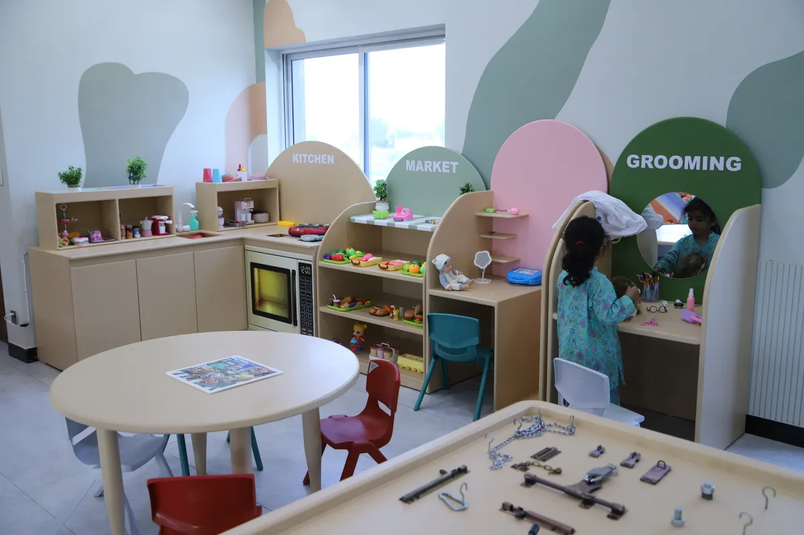
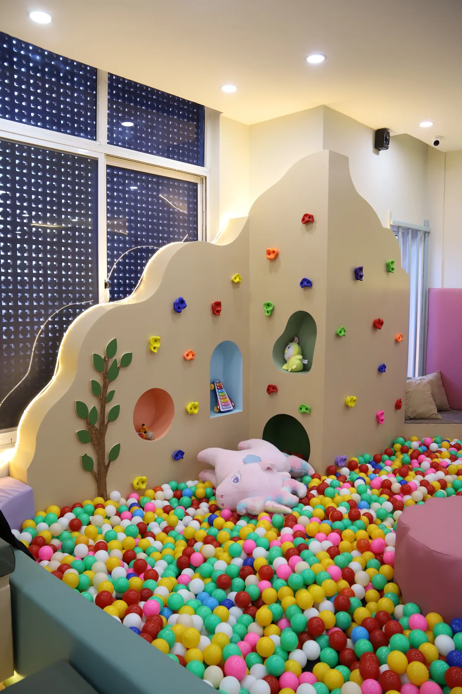
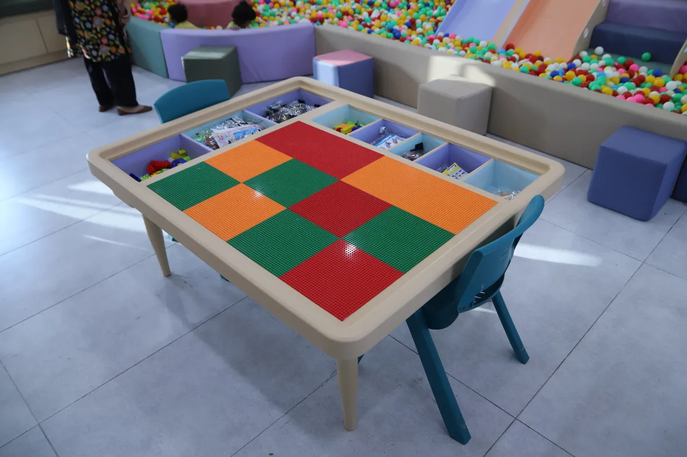

What to Do with Kids in Islamabad During Monsoon and Rainy Days (2026)
Islamabad's monsoon season runs from late June through September. For parents, that means three to four months of frequent rain — and outdoor plans cancelled at the last minute. Here are 8 tested options for keeping kids entertained, engaged and actually tired by bedtime, even when the sky is grey.
Why Rainy Days Are Hard for Islamabad Parents
Most of Islamabad's family-friendly spaces are outdoors. The Margalla Hills trails, F9 Park, Lake View Park and Shakarparian all become difficult to visit when it rains. Malls fill up quickly as everyone has the same idea. And while screen time solves the immediate problem, it does not give children the physical movement and social interaction they need.
A consistent plan for rainy days makes a real difference. Here are the best options for different budgets, ages and energy levels.
1. Visit an Indoor Play Zone
This is the single most effective option for children aged 0 to 10. An indoor play centre gives children 1 to 2 hours of genuine physical and creative play, has staff supervising throughout, and gives parents a proper break rather than just a change of location.
Little Explorers World in Bahria Town Phase 4 is open every day from 12 PM to 10 PM, including during monsoon and public holidays. It has 8 play zones covering slides, climbing, kinetic sand, sensory play, Lego, pretend play and more. The LE Cafe inside means parents can sit with coffee and Wi-Fi while children play, with live CCTV visible from the seating area.
No booking needed — walk in any time during opening hours. Socks are required for children and are available to buy at the counter.

Beat the rain at Little Explorers World — Bahria Town Phase 4, Islamabad. Open daily 12 PM – 10 PM, rain or shine.
Get Directions on WhatsApp2. Home Baking with Kids
Baking is one of those activities that manages to be genuinely educational while feeling like pure fun. Children learn measuring, following instructions, patience and the very satisfying result of eating what they made. Cupcakes, biscuits and no-bake treats work best for younger children. Keep the recipe simple and let them do as much as safely possible.

3. Sensory Play at Home
You do not need special equipment for sensory play. A tray of dry rice, lentils or pasta gives toddlers the same tactile satisfaction as a sand table. Add spoons, cups and small toys. For older children, cornstarch mixed with water creates a satisfying non-Newtonian liquid that never gets old. Spread a mat or towel underneath and let them explore.
If you would rather do sensory play in a proper setup with trained staff, the sensory room and kinetic sand zone at Little Explorers World are designed exactly for this.
4. Indoor Fort Building
Chairs, blankets, cushions and a torch. Children aged 2 to 8 will spend hours building, decorating and playing inside a fort. Set them up with a mission — this is their base, what do they need inside it? Books, snacks, stuffed animals. Then stay out of it and let them run it themselves.
5. Arts, Crafts and Painting
Stock a basic craft box and open it only on rainy days — the novelty factor keeps children more engaged. Watercolour painting, paper collage, making cards for family members and simple origami are all good options. YouTube has clear tutorial videos for projects at every age level. Tape paper to the table first to protect the surface.
6. Board Games and Card Games
For children aged 5 and above, a good board game teaches strategy, patience, number skills and how to lose gracefully. Snakes and Ladders, Ludo, Uno and simple memory card games all work well. Avoid games with too many small pieces for households with toddlers.
7. Cooking Exploration for Older Kids
Children aged 7 and above can handle simple cooking projects with supervision. Making sandwiches, simple pasta, fruit salads or even a basic daal teaches real skills and gives them a genuine sense of accomplishment. Assign roles — one child measures, one mixes, one sets the table — to keep everyone involved.
8. Storytelling and Creative Writing
For quieter afternoons, creative storytelling works surprisingly well for children aged 5 and above. Start a story together — give the hero a name your child chooses, then take turns adding one sentence each. For children who can write, give them a blank book and tell them to fill it with their own story, complete with illustrations. These books become lovely keepsakes.

Rainy Day Activity Guide by Age
| Activity | Best Age | Effort for Parents | Duration |
|---|---|---|---|
| Indoor Play Zone (Little Explorers World) | 0–10 yrs | Low | 1–2 hrs |
| Home Baking | 3+ yrs | Medium | 1–1.5 hrs |
| Sensory Play at Home | 1–6 yrs | Low | 45 min |
| Fort Building | 2–8 yrs | Low | 1–2 hrs |
| Arts and Crafts | 3+ yrs | Low | 1 hr |
| Board Games | 5+ yrs | Low | 45–90 min |
| Storytelling | 5+ yrs | Low | 30–60 min |
The Simplest Answer for Rainy Days
If you want one option that requires zero preparation and works reliably for any child aged 0 to 10, it is to visit Little Explorers World. It is open every day of the year regardless of weather, gives children 8 zones of structured play, and gives parents a genuine break. For many Islamabad families, it has become the standard answer for any difficult day — rainy, holiday or otherwise.
You can also combine it with a birthday party booking if your child's birthday falls during monsoon season. The team handles all setup so you do not have to worry about outdoor party plans falling through.
Frequently Asked Questions
The easiest option is to visit Little Explorers World indoor play zone in Bahria Town Phase 4, open daily 12 PM to 10 PM including rainy days. At home, try baking, sensory play trays, fort building or arts and crafts — all work well without any special materials.
Islamabad's monsoon season typically runs from late June through September, with peak rainfall in July and August. An indoor play zone becomes especially valuable during these months when outdoor plans are regularly cancelled.
Yes. Little Explorers World is open 7 days a week from 12 PM to 10 PM regardless of weather, as it is fully indoors. Rainy days and public holidays are among the busiest times, so arriving at 12 PM or 1 PM gives you the best experience before it gets crowded.
A tray of dry rice, lentils or pasta makes an easy sensory bin for toddlers at home. Add spoons and small containers for pouring and transferring. Cornstarch mixed with water creates a satisfying non-Newtonian texture for older toddlers. Spread a mat underneath for easy cleanup.